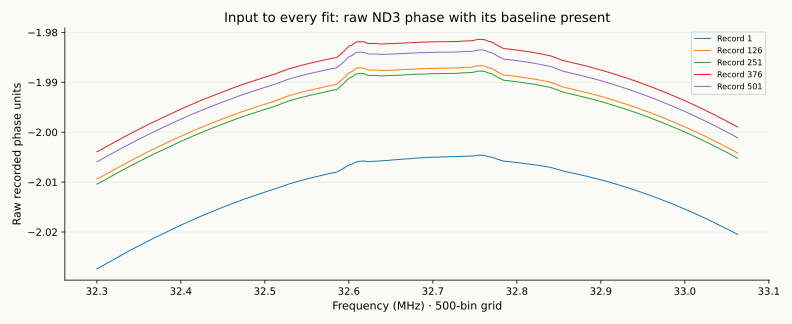
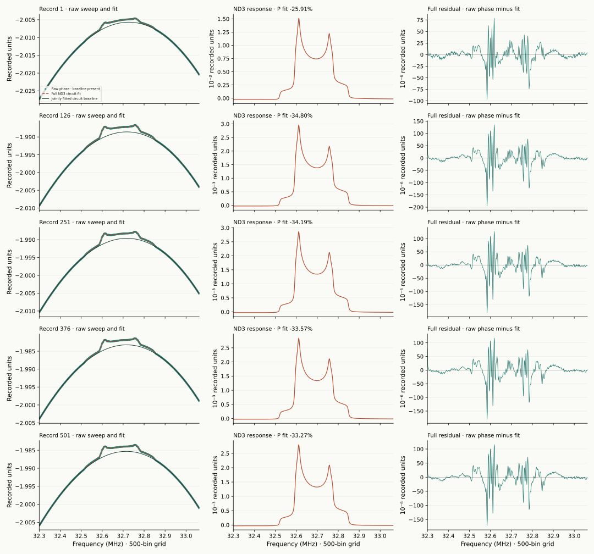

Experimental example 3 of 3
UVA-ND3 data
Fit all 500 raw samples with their baseline present, using the ND3 spin-1 response and the same physical circuit workflow as the other examples.
Raw sweep → joint fit → ND3 response
Fit the ND3 signal with its baseline present.
The 500-bin UVA-ND3 working example supplies the raw phase channel for records 1, 126, 251, 376 and 501. The baseline is already present in these sweeps. The fit uses each complete raw sweep and jointly determines its circuit baseline, detector response and ND3 spin-1 lineshape. No additional baseline is needed.
Every working array uses fⱼ = 32.3 + 0.0015287 j MHz, j = 0…499, ending at 33.0628213 MHz. Raw phase is linearly resampled from the original frequency coordinates in float64. The stored reference and its subtraction are excluded from this raw-phase fit. The reader automatically checks the resampling against the original measurements. Interpolation changes resolution and correlates errors.

The same full-circuit workflow, with the ND3 lineshape
w₊ = (P + Q)/2, w₋ = (P − Q)/2
y_fit = L[a Re(u(χ_ND3) exp(iφ)) + b Im(u(χ_ND3) exp(iφ)) + d]
B_fit = y_fit with χ = 0, S_fit = y_fit − B_fit
The single-site ND3 response uses the complex spin-temperature powder model, with its fitted splitting, broadening and EFG asymmetry. Q = 3P² / (2 + √(4 − 3P²)). The susceptibility vanishes at P=0. Its absorption and dispersion pass through the coil, passive RLGC cable, one tuning capacitor and finite source/input loading, following the same physical circuit as the other examples.
The detector phase is φ₁Δf + φ₂Δf²; its constant phase, gain and offset are represented by the jointly profiled coefficients a, b and d. The five ND3 shape parameters, effective susceptibility amplitude, tuning capacitance, phase slope and phase curvature give nine nonlinear coordinates. Including the three readout coefficients gives 12 fitted unknowns. The baseline comes from the same fitted circuit with susceptibility set to zero.
L is the documented interpolation onto 500 bins. The complete circuit model is evaluated on source coordinates and resampled with the same operator as raw phase. Wings initialize the electronics; the final optimization fits all 500 raw values jointly. The stored reference is not subtracted or fixed as the model baseline.
The configuration lists all fixed circuit values and fit bounds. Fixed values use the standalone tutorial's nominal circuit, including its derived half-wave operating point. These are explicit modeling assumptions. They do not assign the measured butanol hardware to ND3 or establish ND3 component calibration. Polarization comes from the lineshape; no TE calibration or stored acquisition polarization is used.
Five complete raw fits
Keep the baseline visible and inspect the full residual.
| Source record | P from shape | Center (MHz) | Split (kHz) | HWHM (kHz) | EFG η | C_tune (pF) | Raw-fit RMS |
|---|---|---|---|---|---|---|---|
| 1 | -25.910% | 32.684594 | 81.899 | 3.134 | 0.1154 | 681.83 | 16.32 |
| 126 | -34.801% | 32.684622 | 82.015 | 3.223 | 0.1121 | 1056.75 | 29.95 |
| 251 | -34.185% | 32.684650 | 82.094 | 3.249 | 0.1114 | 383.65 | 28.88 |
| 376 | -33.566% | 32.684655 | 82.067 | 3.319 | 0.1114 | 2000.00 | 28.54 |
| 501 | -33.271% | 32.684682 | 82.098 | 3.310 | 0.1114 | 495.07 | 27.91 |

All selected fits converged. Boundary diagnostic: Record 376: tuning capacitance reaches the upper search bound (2000.00 pF) A search-bound solution is a diagnostic of the assumed electronics and does not measure a component setting. The left panels retain the original baseline level in the raw input. The middle panels show the fitted nuclear response, defined after fitting as the complete model minus its χ=0 baseline. The right panels show raw phase minus the complete fit across all 500 bins. The complete fit record saves every starting solution, nominal circuit assumption, fitted parameter, source hash and quadrature check.
Run the raw UVA-ND3 example.
The 500-bin working file is included and checked in walkthrough step 2. Continue in the activated environment using a fresh output directory.
python tools/match_uva_nd3.py \
--output-dir local-results/walkthrough/nd3 --starts 6
python tools/plot_fit.py --fit-dir local-results/walkthrough/nd3 \
--output local-results/walkthrough/nd3-fits.pngCheck: five record summaries, a uva_nd3_report.json, and five CSVs. Open local-results/walkthrough/nd3-fits.png; its first column retains the baseline in each raw input. Inspect the bound flags, including the reference run's 2000 pF limit for record 376. Next: return to the single-site configurations to generate learning data in step 7.
The audited reader verifies the exact grid and reproducible source resampling. The fitting command selects phase. Each saved fit CSV contains frequency, raw phase, full fit, fitted circuit baseline, fitted signal and raw-minus-fit residual. All columns contain 500 values. Everything needed is included in this standalone repository.
Interpret the joint fit as a conditional model.
The circuit and ND3 lineshape are fitted together, so their assumptions affect both the baseline and inferred polarization. These five development records do not establish calibrated hardware, statistical parameter errors or independent polarization accuracy. Structured raw-fit residuals and interpolation-induced correlation remain visible; an independent-bin noise sigma is not inferred from them.
A common raw-sweep workflow and 500-bin grid do not establish material-specific network accuracy. Generator and training results remain tied to their existing contracts. Compare the single-site full-circuit example and the two-site butanol example, and see the material-model record for the ND3 assumptions and validation.